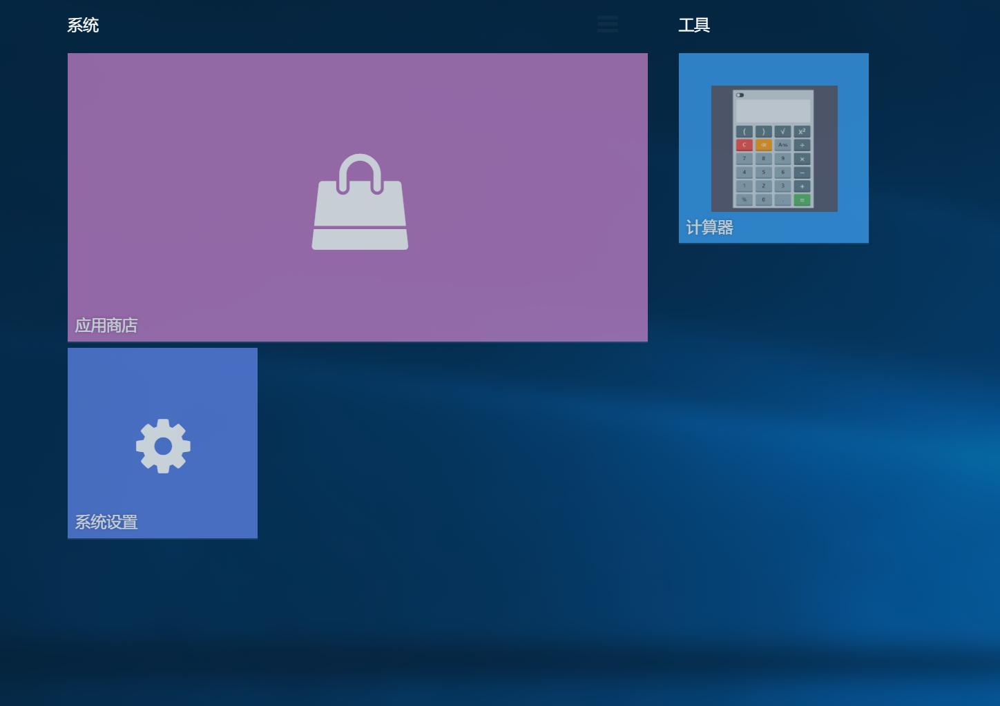

磁贴是一种视觉冲击力很强的UI形式，但是其数据结构比较复杂，推荐用YLUI的可视化工具编辑。

"tiles": [
{
"title": "系统",
"data": [
{
"x": 0,
"y": 0,
"w": 6,
"h": 3,
"app": "yl-app-store",
"title": "应用商店",
"i": "91",
"params": {},
"hash": ""
},
{
"x": 0,
"y": 3,
"w": 2,
"h": 2,
"app": "yl-system",
"title": "系统设置",
"i": "110",
"params": {},
"hash": ""
}
]
},
{
"title": "工具",
"data": [
{
"x": 0,
"y": 0,
"w": 2,
"h": 2,
"app": "yl-calculator",
"title": "计算器",
"i": "109",
"params": {},
"hash": ""
}
]
}
]
磁贴本身由 x,y,w,h,app,title,i,params,hash描述
| 字段 | 类型 | 描述 |
|---|---|---|
| x | int | 左偏移 |
| y | int | 上偏移 |
| w | int | 宽度 |
| h | int | 高度 |
| app | string | APP id |
| title | string | 标题 |
| i | int | key，对所有磁贴唯一 |
| params | json | 类似于桌面图标的params定义 |
| hash | string | 类似于桌面图标的hash定义 |
而磁贴是按组归类的，如上文的“工具”，“系统”。